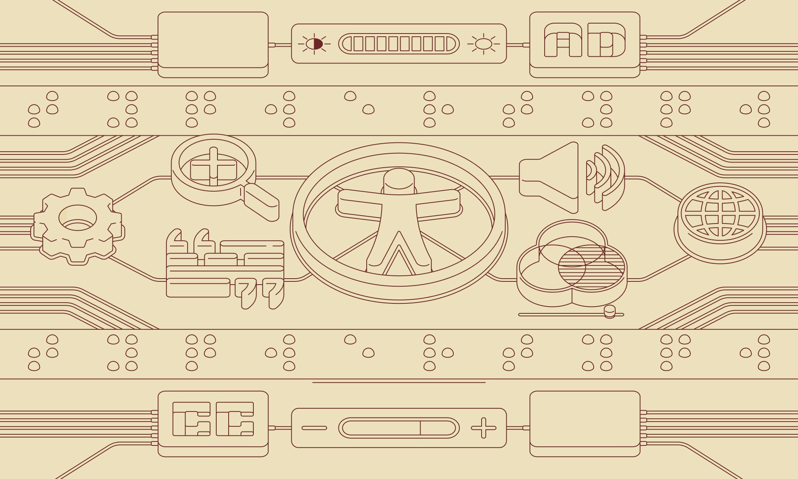
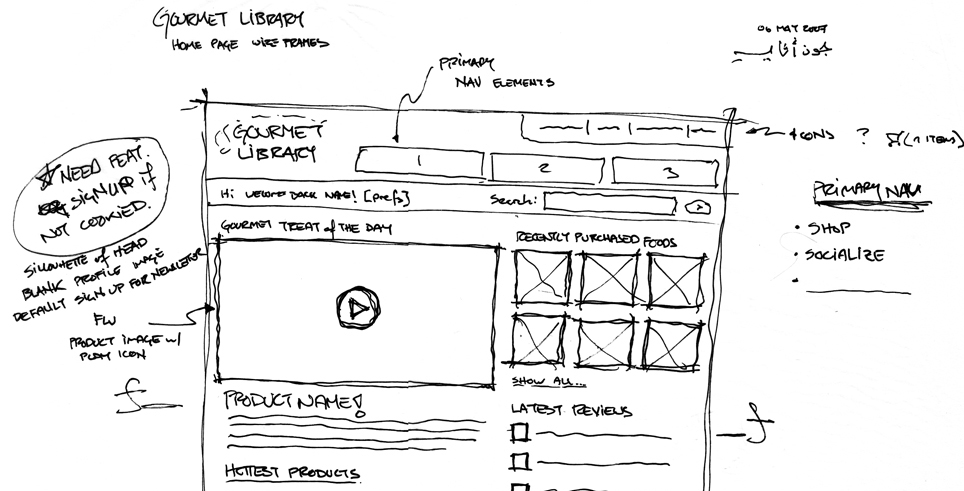
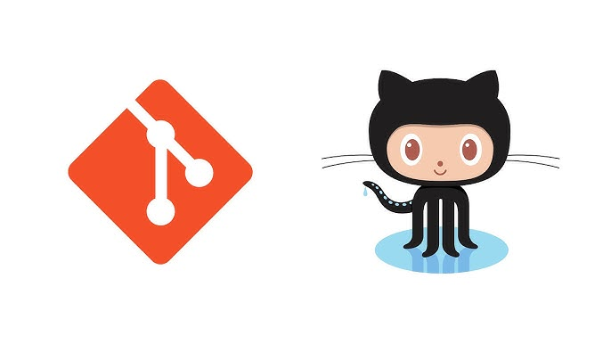

What is the purpose of a README file?
A README file is essential to any project file. It is a text document that provides an overview of a project, with information explaining what the project is, how to use it, and how others can contribute.
It can also contain other important information, like installation instructions, features, and updates.
More on README files here

What is the purpose of a wireframe?
A wireframe is a simple, minimally detailed visual layout of a website (or app), showing the basic structure with the indications of where buttons, text and images will go.
These are considered blueprints to help plan how a page will look and how users will move through it before creating the final design.
Read more about wireframes here

What is a branch in Git?
A branch is an isolated line of development where you can make changes, without it affecting the main project. A branch lets you safetly work on new features, fixes or even experiments. You then merge those changes back into the main code when they're ready.
More information on branches here